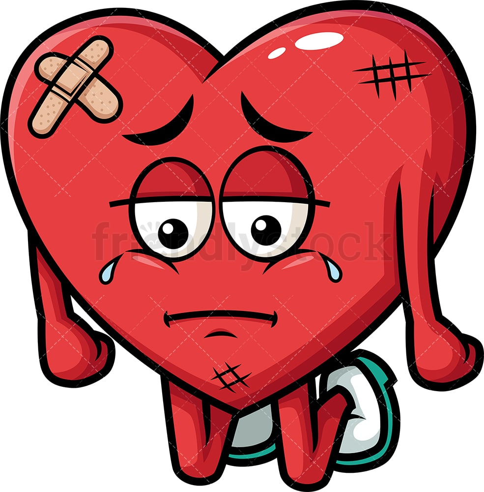

Cardiovascular System:
Sitting for long periods can lead to decreased blood flow and circulation, increasing the risk of cardiovascular diseases such as heart disease and stroke. Blood pools in the legs, which can contribute to the formation of blood clots.
Musculoskeletal System:
Prolonged sitting can cause muscle stiffness and weakness, particularly in the lower back, hips, and legs. It may lead to poor posture, muscle imbalances, and increased risk of musculoskeletal disorders such as back pain and neck pain.

Digestive System:
Sitting for too long can slow down digestion and lead to constipation and bloating. It may also increase the risk of developing digestive disorders such as irritable bowel syndrome (IBS) and gastroesophageal reflux disease (GERD).